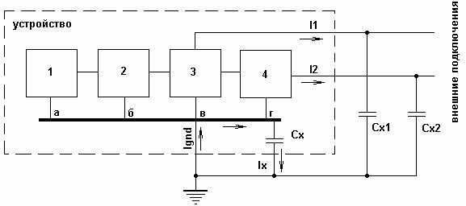
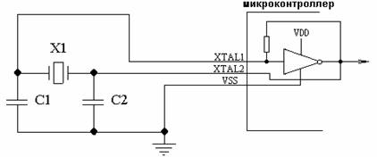
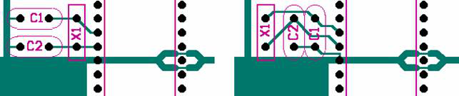
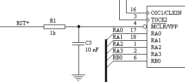
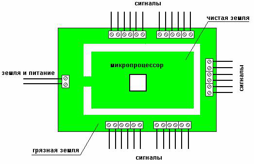
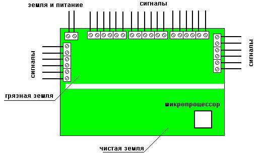
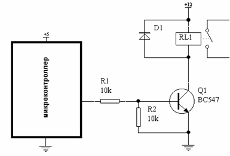
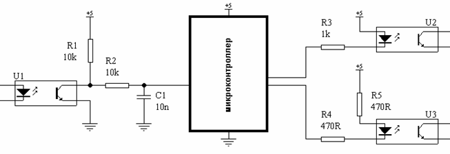
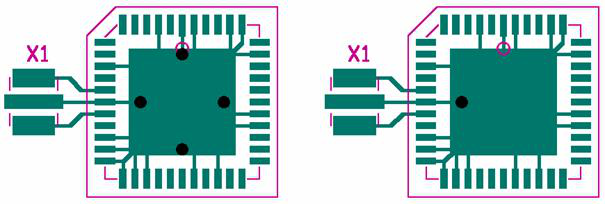

Делайте развязку питания
В момент пуска двигатели потребляют гораздо больше тока, чем в нормальном режиме. Например, для двигателей с пусковым током 1А происходит мгновенная просадка напряжения, часто достаточная для перезагрузки микроконтроллера. Чтобы побороть эту просадку необходимо осуществить развязку питания диодом Шоттки и большим конденсатором.
Линия Vcc питает всю логическую часть схемы, а силовая часть драйвера двигателя запитана от батарейки непосредственно (самая верхняя линия на рисунке). Когда напряжение питания падает, диод закрывается, и ток от конденсаторов идет только на линию Vcc, что нам и требуется. Емкость конденсатора должна быть достаточной, чтобы поддерживать питание логики на время просадки. Мне хватило двух конденсаторов по 4,7мФ. Последовательно включенная индуктивность превращает всю конструкцию в LC-фильтр.
Разделяйте землю на аналоговою и цифровую части
На предыдущем рисунке видно, что земля разделяется на две ветки, AGND и DGND. На схеме это неважно, но на практике это означает, что линия земли, обслуживающая цифровую часть, и земля двигателей должны пересекаться лишь в одной точке, максимально близко расположенной к «минусу» источника питания.

Разумеется, земляные полигоны также должны быть разделены (штрих-пунктир на рисунке).
Убедитесь в целости механических частей
Этого совета в Интернете я не встречал, но в моем случае он оказался одним из решающих. На одном из моих двигателей треснула пластиковая шестерня на валу. Это практически не сказалось на работоспособности двигателя с редуктором, поэтому заметил это я только на осциллографе. В момент попадания шестерни редуктора в трещину происходило небольшое подклинивание, что приводило к мгновенному возрастанию потребляемого тока и появлению помехи на частоте вращения двигателя.
Заземлите кварцевый резонатор
Цепь внешнего тактирования Atmega XTAL1/XTAL2 служит отличным путем для наводок. Поэтому если в вашем проекте вы используете кварцевый резонатор, велика вероятность, что в сильно шумящем окружении контроллер начнёт сходить с ума. В моем случае это выразилось в зависании, пропуске кусков программы или внезапном изменении частоты работы в большую или меньшую сторону. Чтобы победить эту проблему, мне хватило совета из п. 2., однако если и это не помогло, попробуйте заземлить кварц, припаяв на его корпус провод, идущий к цифровой земле. Будьте осторожны — кварцевый резонатор легко вывести из строя перегревом.
Экранируйте кварцевый резонатор
Обычно я делаю цельноземляную заливку на плате, но если это вам не по душе, сделайте по крайней мере небльшой земляной полигон вокруг кварца и балластных конденсаторов, как сказано в рекомендациях Atmel. Как и в предыдущем пункте, это поможет защитить линию тактирования от помех. Это же относится к случаю, если какая-либо аналоговая линия проходит параллельно логической — имеет смысл разделить их земляным полигоном.
Используйте внутренний осцилятор
Внутренний осциллятор не такой точный, как кварцевый резонатор, а так же зачастую не дает максимальную для контроллера тактовую частоту. Но если совсем ничего не выходит — можно попробовать использовать его. Первая неудачная модель моего робота стабильно работала только с внутренним осциллятором.
Электроника — наука о плохих контактах
Трижды проверьте все контакты на предмет плохой пропайки. Избегайте перемычек на линии питания логики.
Контакты бывают и хорошие, но не там, где нужно. У меня был случай, когда робот прекрасно работал, но моментально перезагружался при попытке послать что-либо через Bluetooth. Оказалось, что Reset был закорочен на линию серийного порта капелькой припоя.
Следуйте рекомендациям производителей
Почти все даташиты предлагают рекомендации по обвесу. Atmel выпускает даже отдельный документ — AVR Hardware Design Considerations.
Например, Atmega8 должна быть оснащена четырьмя конденсаторами (Reset, Vcc, ARef, AVCC), располагающимися как можно ближе к соответствующим выводам. Reset должен быть подтянут к питанию через резистор в 10KОм, основное питание (Vcc) оснащается своим отдельным LC-фильтром. Кварц и балластные конденсаторы должны располагаться как можно ближе к МК. Вообще любая микросхема должна иметь собственный отдельный конденсатор, развязывающий питание.
Поставьте конденсаторы параллельно контактам двигателей
Конденсаторы (100нФ) следует припаять непосредственно к контактам двигателей.
Для того чтобы снизить помехи от "искрящих" цепей электродвигателей, параллельно двигателям включают керамические конденсаторы 0,01...0,1 мкф. Конденсаторы располагают непосредственно на самих контактах двигателей.

Дополнительной мерой может служить шунтирование каждого контакта электродвигателя на его корпус или на "землю".

Понизьте уровень Brown-out
Brown-out — означает падение уровня напряжения. Микроконтроллеры оснащены детектором такой просадки. При ее возникновении микроконтроллер отключается. Однако уровень, при котором происходит отключение, можно регулировать. Например у Atmega8 существует три опции: детектирование отключено, срабатывание при уровне 2.7V, срабатывание при уровне 4.0V. Отключать Brown-out detection полностью я не советую, но понижение уровня срабатывания может помочь. Когда я понизил уровень до 2.7V система стала работать значительно стабильнее.
http://caxapa.ru/lib/emc_immunity.html
Наносекундные помехи. Разделение земли на "чистую" и "грязную".
Развязка внешних сигналов при помощи оптронов тоже слывет хорошим средством повышения помехоустойчивости, но на самом деле не является надежной защитой от НП.

Радикального уменьшения помехового напряжения во внутренней земле устройства можно достичь если правильно скомпоновать устройство и выбрать оптимальную точку заземления. Например, вполне очевидно, что во внутренней земле устройства на рисунке выше помеховые токи вообще не текут на участке "а" - "в", соответственно, у узлов 1 и 2 нет причин для сбоя.
Устройство можно представить так: внутренняя земля устройства разделена на две части, чистую ("а" и "б") и грязную ("в" и "г"). По чистой земле помеховые токи не протекают, к этой земле можно присоединять все узлы, потенциально чувствительные к помехам (узлы 1 и 2). Помеховые токи текут только по грязной земле, с которой можно связывать только узлы нечувствительные к помехам (узлы 3 и 4).
Реальная картина вряд ли будет настолько идиллическая. Паразитную емкость Сх очень редко удается сосредоточить только в грязной земле, частично она существует и в чистой левой части. За счет этой емкости полностью избавиться от помеховых токов в чистой земле не удается.
Проиллюстрируем сказанное несколькими примерами.
Пример 1.
На фиг.5 представлена схема кварцевого генератора микроконтроллера. Основу генератора составляет скоростной инвертирующий усилитель, встроенный в микроконтроллер. Режим работы по постоянному току задается встроенным высокоомным резистором, включенным между входом и выходом этого усилителя. Для корректной работы генератора дополнительно к внешнему кварцевому резонатору Х1 требуются два конденсатора малой емкости, С1 и С2. Конденсаторы и земляная ножка микропроцессора подключены к внутренней земле устройства.

Фиг.5
Точки подключения конденсаторов и микроконтроллера к земле печатной платы играют существенную роль. Малейший перекос земляных потенциалов между С1 и VSS, возникающий при прохождении НП по земле устройства, будет многократно усилен и попадет внутрь микроконтроллера как ложный короткий тактовый импульс. Поскольку длительность ложного тактового импульса намного меньше чем длительность "настоящих" тактовых импульсов, внутренняя логика микропроцессора может придти в непредсказуемое состояние. Микропроцессор "зависнет", и не всякий встроенный сторожевой таймер сможет его сбросить, так как в некоторых микроконтроллерах сторожевые таймеры тактируются от общего генератора, и сами могут "зависнуть" после воздействия такой помехи.

Выше показаны примеры разводки этого узла на печатной плате.
Фрагмент слева разведен обычным образом, в предположении что потенциалы земель во всех точках печатной платы равны. Конденсаторы С1 и С2 подключены к земле точно так же, как и все остальные элементы схемы, толщина земельных проводников выбрана большой. Такая разводка встречается часто, но, к сожалению, она не обеспечивает хорошей помехоустойчивости.
Фрагмент справа разведен таким образом, чтобы помеховый ток не протекал по дорожке, соединяющей конденсаторы С1 и С2 с земляной ножкой микроконтроллера. Эта дорожка образует участок чистой земли. Помехоустойчивость устройства с такой разводкой максимальна.
Пример 2.
Вход сброса микроконтроллера является еще одной цепью, подверженной влиянию наносекундных помех. Нередко разработчики игнорируют этот очевидный факт и используют разветвленную цепь сброса, непосредственно подключенную к различным узлам на плате. Перекос земель между источником сигнала сброса (часто это супервизор питания) и микроконтроллером вызывает ложный сброс устройства.
Схемотехнически решить эту проблему нетрудно, достаточно на вход микроконтроллера добавить простую RC-цепочку, как показано на фиг.7. Однако такое решение должно сопровождаться и правильной разводкой земель, иначе никакой пользы оно не принесет.
Требования к разводке дорожки, соединяющей С3 с земляной ножкой микроконтроллера, такие же как для первого примера: никакие другие детали кроме С3 к этой дорожке подключать нельзя. Исключение составляют только конденсаторы обвязки кварца (С1 и С2 на фиг.5).

Фиг.7
Пример 3.
Обеспечить высокую помехоустойчивость устройства можно на этапе общей компоновки. Типичное устройство, при компоновке которого вопросы помехоустойчивости не были приняты во внимание, показано на фиг. 8. Для подключения внешних сигналов и питания в нем использованы все четыре кромки печатной платы. Микропроцессор расположен почти в центре печатной платы, то есть в месте максимально подверженном влиянию наносекундных помех. В случае использования сплошной земли, очень вероятно что такое устройство будет сбоить.

Фиг.8
Не меняя компоновки, существенного улучшения помехоустойчивости в таком устройстве можно достичь, если разделить земли на чистую и грязную, как условно показано на фиг.8. Наружный контур земли является грязной землей, он специально предназначен для распространения наносекундных помех. К грязной земле нельзя подключать устройства, чувствительные к помехам.
Внутренний "полуостров" чистой земли соединенен с грязной землей в одной точке. Во все сигнальные линии, проходящие между чистой и грязной землями, необходимо добавить резисторы или дроссели, чтобы преградить путь помехам (барьеры).
Дальнейшее улучшение помехоустойчивости достигается перекомпоновкой устройства, как показано на фиг.9. Видно, что все терминалы сосредоточены с одной "грязной" стороны платы. Тем самым путь распространения помех по земле платы значительно сокращен.

Фиг.9
После того как внутренние земли устройства разделены на чистые и грязные, возникает вопрос - как предотвратить проникновение помех из грязной земли в чистую? Например, в устройстве фиг.4 узел 2 подключен к чистой земле, но он обменивается сигналами с узлом 3, который подвержен влиянию помех. В приведенном выше примере 3 было упомянуто, что сигнальные цепи, соединяющие узлы на чистой и грязной землях должны содержать помеховые барьеры - резисторы или дроссели. Практика показывает, что повсеместное использование барьеров обычно повышает помехоустойчивость устройства в несколько раз.
Пример 4.
Рассмотрим микроконтроллер, управляющий мощной нагрузкой при помощи реле. Для управления реле используется биполярный транзистор.

Фиг.10
Контакты реле являются источником наносекундных помех. Кроме того, внешние помехи достаточно легко проходят "сквозь" реле за счет его паразитной проходной емкости и емкостей монтажа. Вместе с тем, ни реле, ни транзистор Q1, сами по себе влиянию НП не подвержены.
Земляной вывод микроконтроллера VSS подключен к чистой земле, эмиттер транзистора Q1 - к грязной. Резистор R1, помимо своей основной функции, выполняет роль барьера, препятствующего распространению помех из грязной части в чистую. Проходная емкость резистора как правило мала, порядка 0.2...0.3 пФ, поэтому резисторы создают эффективный барьер для НП. В особо тяжелых случаях для уменьшения проходной емкости можно включать по два-три резистора последовательно.
Если бы вместо биполярного использовался полевой транзистор, то R1 пришлось бы поставить именно в качестве барьера, хотя для функционирования схемы он был бы и не нужен.
Пример 5.
Другой типичный пример - подключение оптронов к микроконтроллеру. На фиг.11 представлен фрагмент входной и выходной оптронной развязки.

Эмиттер входного оптрона U1 подключен к грязной земле, т.к. за счет проходной емкости в 0.5 пФ оптрон полупрозрачен для НП. Сам низкоскоростной оптрон достаточно безразличен к НП, но надо заметить, что оптроны с подключенным выводом базы фототранзистора иногда "ловят помеху", поэтому предпочтительней использовать оптроны без вывода базы.
Резистор R1 может быть подключен как к грязному, так и к чистому питанию, поскольку сам резистор является барьером, препятствующим прохождению НП на чистое питание.
Резистор R2 величиной 1к...100к служит помеховым барьером между оптроном и микроконтроллером. Конденсатор С1 не является обязательным элементом, однако наличие этого конденсатора дополнительно улучшает помехоустойчивость, так как уменьшает помеховый ток, протекающий по земляной ножке микроконтроллера. С1 и микроконтроллер подключены к чистой земле.
Анод светодиода выходного оптрона U2 подключен к грязному питанию +5В. Токозадающий резистор R3 одновременно служит помеховым барьером. В особо тяжелой помеховой обстановке полезно зашунтировать светодиод оптрона конденсатором 1...10 нФ, или хотя бы резистором.
В случае когда невозможно или неудобно подключать оптрон к грязному питанию, можно разделить токозадающий резистор на два, как это показано для оптрона U3. Резистор R5 служит помеховым барьером между оптроном и чистой шиной питания +5В.
Емкостные связи
Часть помехового тока протекает через емкость связи. Вспомним, что при испытании устройства на помехоустойчивость оно должно находиться на изолирующей подставке на высоте 100 мм над сплошной земляной поверхностью. Иногда одной только емкости связи с землей бывает достаточно для сбоя устройства.
Разделение земель на чистую и грязную само по себе не уменьшает суммарную величину емкостной связи. Соотношение емкостей связи для чистой и грязной земель соответствует отношению их площадей.
Вполне очевидными методами борьбы с емкостными связями является перераспределение земель, уменьшение площадей проводников и частичное экранирование.
Обратите внимание на положение микроконтроллера на фиг.9. Он расположен в углу платы, поэтому за счет емкостной связи сквозь него будет течь сравнительно небольшой ток. На фиг.8 микроконтроллер расположен иначе. Большой полигон чистой земли справа от него имеет значительную емкостную связь с истинной землей, поэтому вероятность сбоя будет намного больше.
Пример 6.
На фиг.12 показаны два варианта разводки земляного полигона под микроконтроллером. Вместо кварца и конденсаторов используется трехвыводной керамический резонатор для монтажа на поверхность Х1. Разводка выполнена для гипотетического "правильного" микроконтроллера, разработчики которого позаботились о помехоустойчивости и расположили земляной вывод между выводами генератора. Это не утопия, микроконтроллеры семейства M16C фирмы Ренесас, которые являются одними из самых помехоустойчивых 16-битных микроконтроллеров, действительно имеют подобное расположение выводов.

Фиг.12
Неиспользованные выводы микроконтроллера подключены к внутреннему земляному полигону.
На фиг.12 слева земляной полигон соединен с чистой землей платы несколькими переходными отверстиями. За счет этого устройство оказывается не помехоустойчивым. Помеховый ток, протекающий чистой земле и уходящий в истинную землю через емкостную связь, создает градиент потенциала ("перекос"). Переходные отверстия передают перекос на земляной полигон микроконтроллера. Помеховый ток частично протекает через ножки микроконтроллера, подключенные к полигону, что может вызвать сбой.
На фиг.12 справа земляной полигон микроконтроллера соединен с чистой землей в одной точке, рядом с земляной ножкой микроконтроллера. Помехоустойчивость устройства максимальна, т.к. чистая земля на противоположной стороне платы при этом становится разновидностью экрана, защищающего "сверхчистую" землю полигона.